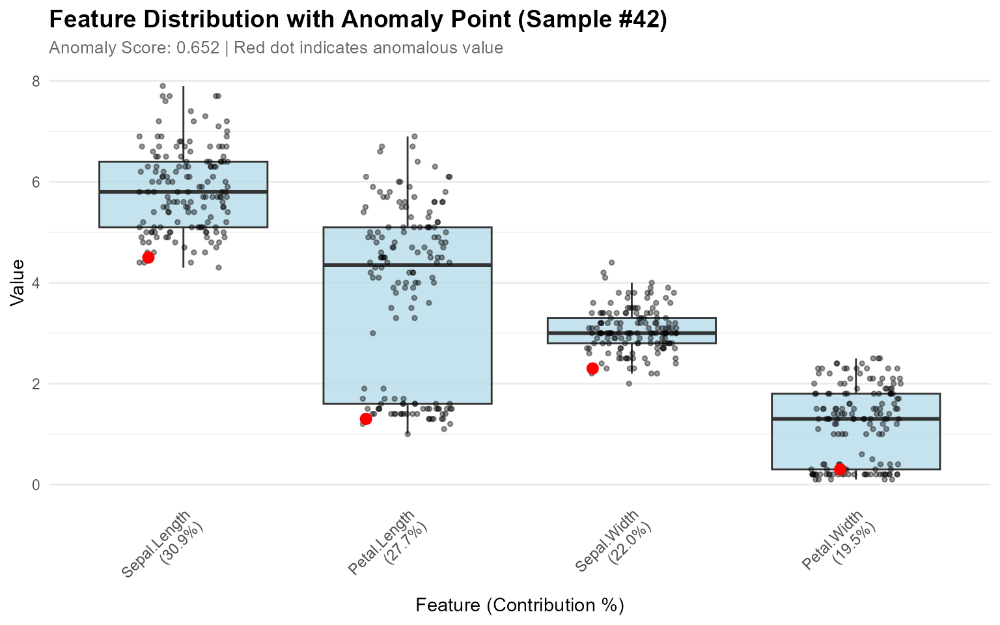
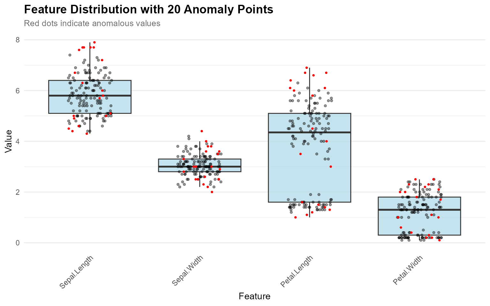
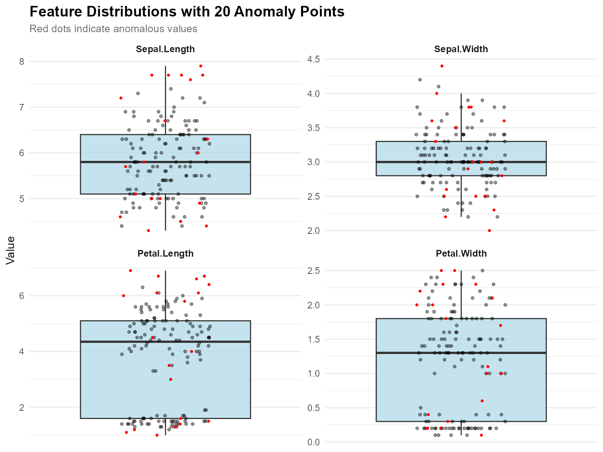
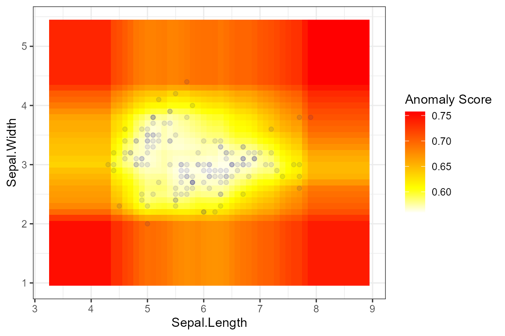
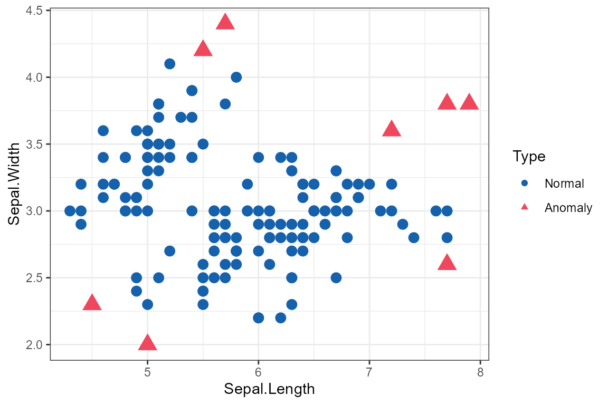
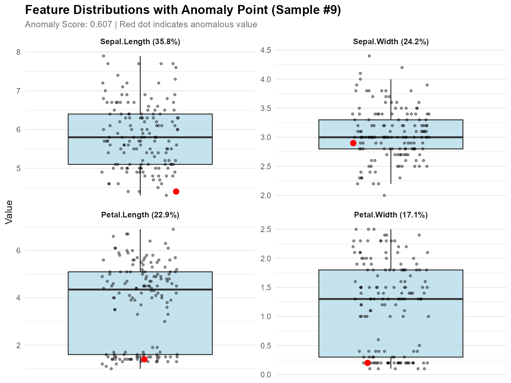

Overview
The {isoForest} package is a simple replication of the Isolation Forests algorithm for outlier detection, and the {ranger} package is used to truly construct the forests. In addition, the visualization of outliers is also implemented to help better observe the prediction results.
Here’s how isoForest was built:
-
Use the ranger() function of the ‘ranger’ package to build the forest. Key parameter for Isolation Forests is:
- sample_size: min(nrow(data), 256L) In the process of constructing a decision tree, when the sampling number is 256, the effect is the best.If the number of samples does not exceed 256, take all samples.
- max_depth: ceiling(log2(sample_size))
- min.node.size: 1 Every sample ultimately exists in an independent node.
- num.random.splits: 1 Consider splitting based on only one feature each time.
- splitrule: “extratrees” The splitting point of the feature is random.
- replace: FALSE Perform sampling without replacement.
Obtain the depth information from each leaf node to the root node for every tree in the model.
Use the original samples for prediction and obtain the predicted leaf node ID for each sample in each tree.
Retrieve the depth of the predicted value for each sample in each tree and calculate the average depth across the entire forest for each sample.
Calculate the anomaly score for each sample using the average depth across the entire forest.
Setting Anomaly Thresholds
The package provides multiple methods to automatically determine anomaly thresholds:
# Train model
model <- isoForest(iris[1:4])
# Method 1: Contamination-based (most common)
result_contamination <- set_anomaly_threshold(
model,
method = "contamination",
contamination = 0.05
)
# Method 2: MAD (robust to outliers)
result_mad <- set_anomaly_threshold(
model,
method = "mad",
mad_multiplier = 3
)
# Method 3: KDE-weighted (density-aware)
result_kde <- set_anomaly_threshold(
model,
method = "kde_weighted",
kde_multiplier = 3
)
# Method 4: MTT (statistical test, good for small samples)
result_mtt <- set_anomaly_threshold(
model,
method = "mtt",
mtt_alpha = 0.05
)
# Compare results
cat("Contamination method:", sum(result_contamination$predictions$is_anomaly), "anomalies\n")
#> Contamination method: 8 anomalies
cat("MAD method:", sum(result_mad$predictions$is_anomaly), "anomalies\n")
#> MAD method: 20 anomalies
cat("KDE-weighted method:", sum(result_kde$predictions$is_anomaly), "anomalies\n")
#> KDE-weighted method: 6 anomalies
cat("MTT method:", sum(result_mtt$predictions$is_anomaly), "anomalies\n")
#> MTT method: 9 anomaliesFeature Contribution Analysis
Understand which features contribute most to a sample’s anomaly score:
# Analyze feature contributions for specific samples
contributions <- feature_contribution(
model,
sample_ids = c(42, 107),
data = iris[1:4],
method = "path"
)
# Print results
print(contributions)
#> Feature Contribution Analysis
#> =============================
#>
#> Sample 42 | Score: 0.652
#> Sepal.Length: 30.9%
#> Petal.Length: 27.7%
#> Sepal.Width: 22.0%
#> Petal.Width: 19.5%
#>
#> Sample 107 | Score: 0.606
#> Sepal.Width: 26.1%
#> Sepal.Length: 24.6%
#> Petal.Length: 24.6%
#> Petal.Width: 24.6%
#>
#> Summary (Top 4 features):
#> Sepal.Length: 27.7%
#> Petal.Length: 26.1%
#> Sepal.Width: 24.1%
#> Petal.Width: 22.1%Feature Distribution Visualization
Visualizing Single Anomaly
When you want to understand why a specific sample is anomalous:
# Calculate contributions
contributions <- feature_contribution(model, sample_ids = 42, data = iris[1:4])
# Plot boxplots showing where the anomaly falls
plot_anomaly_boxplot(contributions, iris[1:4], sample_id = 42, top_n = 4)
Visualizing Multiple Anomalies
When you want to see where all detected anomalies fall in the distributions:
# Detect anomalies
result <- set_anomaly_threshold(model, method = "mad", mad_multiplier = 3)
anomaly_ids <- which(result$predictions$is_anomaly)
# Visualize all anomalies at once (no contribution_obj needed)
plot_anomaly_boxplot(
contribution_obj = NULL,
data = iris[1:4],
sample_id = anomaly_ids
)
Faceted View for Multiple Features
# Faceted view - better for viewing many features
plot_anomaly_boxplot_faceted(
contribution_obj = NULL,
data = iris[1:4],
sample_id = anomaly_ids,
top_n = 4,
ncol = 2
)
Key Features:
-
Flexible Input: Works with or without
contribution_obj -
Multiple Anomalies:
sample_idcan be a vector to highlight many points - Auto-Optimization: Point size adjusts automatically when >5 anomalies
- Smart Labels: Subtitle adapts based on number of anomalies
- Jitter Effect: All points use jitter to avoid overlap
Basic Visualization
Heatmap
result <- isoForest(iris[1:2])
plot_anomaly_basic(result, iris[1:2], plot_type = "heatmap")
Scatter Plot
result <- isoForest(iris[1:2])
plot_anomaly_basic(result, iris[1:2], plot_type = "scatter")
Complete Workflow Example
Here’s a complete example combining all features:
# 1. Train model
model <- isoForest(iris[1:4])
# 2. Set threshold using robust method
result <- set_anomaly_threshold(model, method = "mad", mad_multiplier = 3)
# 3. Get anomaly IDs
anomaly_ids <- which(result$predictions$is_anomaly)
cat("Detected", length(anomaly_ids), "anomalies\n")
#> Detected 19 anomalies
# 4. Analyze top anomaly
if (length(anomaly_ids) > 0) {
top_anomaly <- anomaly_ids[1]
contributions <- feature_contribution(model, sample_ids = top_anomaly, data = iris[1:4])
cat("\nTop anomaly (Sample", top_anomaly, "):\n")
print(contributions$sample_1$contributions)
# 5. Visualize
plot_anomaly_boxplot_faceted(contributions, iris[1:4], sample_id = top_anomaly)
}
#>
#> Top anomaly (Sample 9 ):
#> NULL
High-Dimensional Data Visualization
For high-dimensional data (more than 4 features), dimensionality reduction techniques like PCA and UMAP help visualize anomalies in 2D space. For large datasets, automatic smart sampling is applied to improve visualization speed while preserving all anomalies.
PCA Visualization
# Quick PCA projection
plot_pca <- plot_anomaly_projection(
model = model,
data = iris[1:4],
dim_reduction = "pca",
method = "mtt"
)
print(plot_pca)Features: - Shows variance explained by PC1 and PC2 - Fast and stable - Works with any dimensional data - Automatic sampling for large datasets (anomalies always shown)
UMAP Visualization
# Requires: install.packages("umap")
# UMAP projection (better for non-linear patterns)
plot_umap <- plot_anomaly_projection(
model = model,
data = iris[1:4],
dim_reduction = "umap",
method = "mtt",
umap_n_neighbors = 15,
umap_min_dist = 0.1
)
print(plot_umap)Features: - Preserves local and global structure - Better reveals clusters - Ideal for complex, non-linear relationships
PCA vs UMAP Comparison
# Requires: install.packages(c("umap", "gridExtra"))
# Compare both methods side-by-side
comparison <- plot_anomaly_projection_all(
model = model,
data = iris[1:4],
method = "mtt"
)Smart Sampling for Large Datasets
For datasets with many points, the visualization functions automatically apply smart sampling to improve speed:
# Default: anomalies represent 5% of displayed points
# If you have 100 anomalies, ~2000 total points will be shown
plot_anomaly_projection(model, large_data)
# Show fewer points (faster, anomalies = 10% of display)
plot_anomaly_projection(model, large_data, sample_rate = 0.10)
# Show more points (slower, anomalies = 2% of display)
plot_anomaly_projection(model, large_data, sample_rate = 0.02)
# Disable sampling (show all points)
plot_anomaly_projection(model, large_data, sample_rate = NULL)How it works: - All anomalies are always
shown - Normal points are randomly sampled - Target: anomalies
represent sample_rate proportion of displayed data -
Example: 50 anomalies with sample_rate = 0.05 → show ~1000
total points
When sampling is applied, the subtitle will show:
Method: mtt | Anomalies: 50/5000 (1.0%) | Threshold: 0.635 | Showing: ~1000/5000 pointsWhen to Use Which Method?
| Scenario | Recommended Method |
|---|---|
| Quick exploration | PCA |
| Linear relationships | PCA |
| Non-linear patterns | UMAP |
| Cluster discovery | UMAP |
| Need interpretability | PCA |
| Complex high-dimensional data | UMAP |
Recommended Workflow
-
Start with PCA for fast exploration
plot_anomaly_projection(model, data, dim_reduction = "pca") # Default sample_rate = 0.05 (anomalies = 5% of display) -
Try UMAP if PCA doesn’t separate anomalies well
plot_anomaly_projection(model, data, dim_reduction = "umap") -
Compare both methods to see which works better
plot_anomaly_projection_all(model, data) # Shows PCA and UMAP side-by-side with shared title -
Adjust sampling if needed for speed or detail
# Faster visualization (fewer points) plot_anomaly_projection(model, data, sample_rate = 0.10) # More detail (more points) plot_anomaly_projection(model, data, sample_rate = 0.02) -
Validate with feature-level analysis
plot_anomaly_boxplot_faceted( contribution_obj = NULL, data = data, sample_id = anomaly_ids )
This multi-level approach ensures you understand anomalies from both global (dimensionality reduction) and local (feature-level) perspectives. The smart sampling feature makes it practical to visualize large datasets without sacrificing insight into anomalies. ```